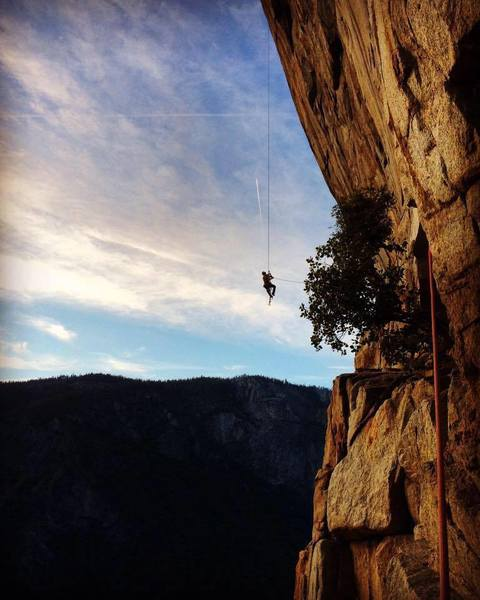
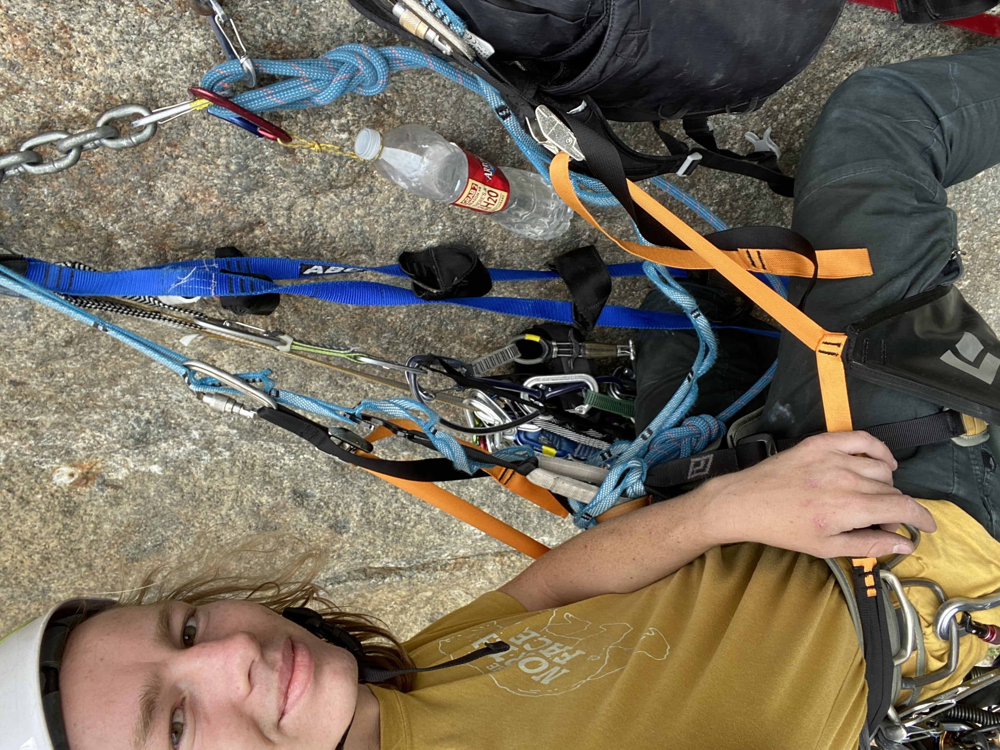
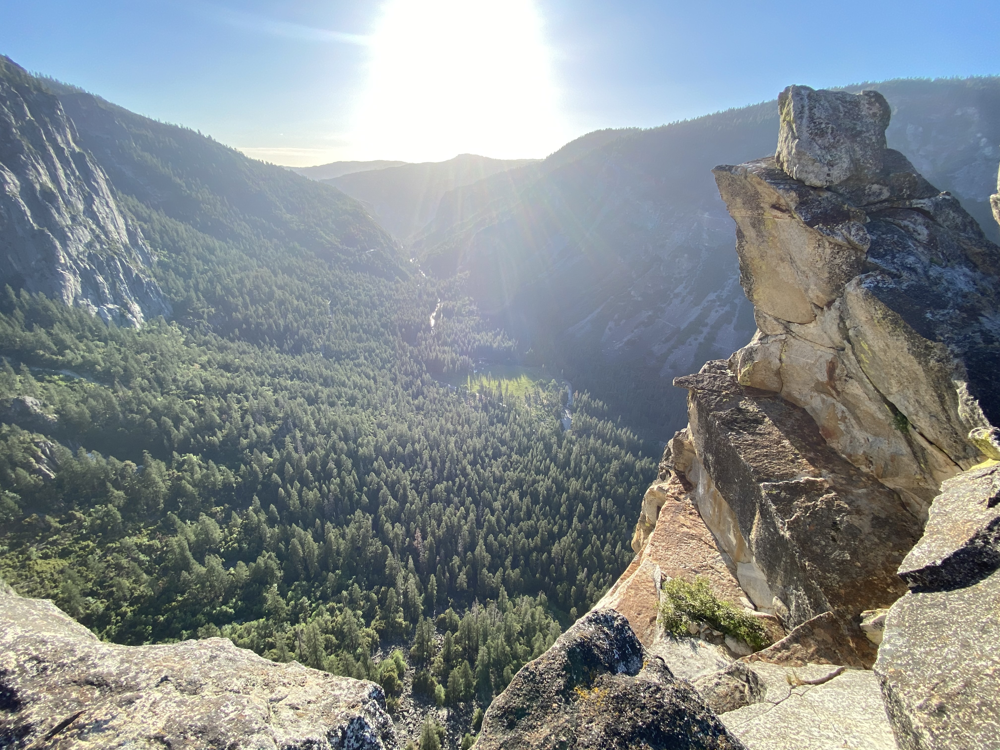

West Face, Leaning Tower (C3) - Yosemite Valley
Tuesday, June 7th 2021
Leaning Tower is a stunning feature of Yosemite valley. Situated just to the right of Bridalveil Falls, the 2000 foot wall averages an overhang of 110 degrees. Our objective was the West face, an 11 pitch route straight up the middle. The route itself, due to a convenient traversing ledge that grants ground access to the middle of the wall, is only around 1000 feet. Most parties complete the route over two days as practice for bigger walls like El Cap. It features two beautiful ledges for camping—large enough for a tent—and other-worldly exposure.
Garrick and I hoped to complete the route in one Tuesday. He worked every other day, so our plan was to drive to the valley Monday night, get a nice alpine start, and be home late Tuesday night. We did finish the route itself within our planned timeline, but due to nightmarish stuck ropes, we ended up returning home much later than planned…
We started hiking around 5, and were surprised by the hike. It mostly consisted of a field of large boulders on a steep incline; Nothing too difficult, but definitely taxing. We got to the base of the wall around first light, and I took the first pitch. We had decided to skip every other anchor, turning the 11 pitch climb into 6 mega-pitches. My lead was an enormous bolt ladder. It had probably close to 50 bolts, separated in the middle with two hook moves to break the monotony. While I didn’t have to think much, my biceps were on fire by the end!
 Jugging up the first pitch. Steep!We took up a type of chair with us that was an absolute lifesaver during belays. Aid pitches are time consuming, and they become much more so when you link them together. It made for great rests in t-shirt weather, protected from the sun until the evening. Garrick led the crux aid pitch—expertly, if I might add.
 Belaying Garrick from the belay seatUp next was the traverse pitch. I lowered from the anchors about 10 feet to the pendulum into a rightward-leaning crack that trends upwards for around 80 feet. While I didn’t take any falls on this pitch, I certainly expected to as many of the placements were marginal at best. The crack ended abruptly, followed by 25 feet of unprotected free climbing. While it was fairly easy 5.7, the rope drag from the traverse combined with our hefty aid rack added what felt like 3 whole grades.
After Garrick’s extended lead of pitch 7 (so long that it’s not possible to link to others), I was up again for a roof. By now I was accustomed to the overhand so a roof wasn’t too daunting. The biggest hiccup was the bird who made his anger very clear as I climbed past his nest in the wide crack. Garrick brought us to the top, about an hour before sunset. I can distinctly remember commenting to Garrick, “We might still be able to make it to the car before dark!” I should never attempt to make a living as a fortune teller…
 Setting sun from the summit A view of El Cap
A view of El Cap
From the summit, you make a full 70m rappel down a low-angle slab to a landing near bridalveil creek, then several more rappels into a series of chimneys broken by small landings. Now I’ve done plenty of rappel descents. If you know what to do they’re safe and efficient. However, several comments regarding this particular descent gave us reason to worry: “The ropes will likely get stuck or dislodge rocks…” We were sure to be careful, but still had some uncertainty. The gully itself became more foreboding as the sun set, and we could no longer see to the bottom. It all became one shrouded corridor of rock. We were met at the entrance of the chimney by several large blocks that had become lodged in, forming a type of ceiling. I tried not to linger on the question of how often boulders of that size happened to shoot down the chimney.
 Looking down the descent chimney
Looking down the descent chimney
In total there were 9 rappels to be made - 5 down the chimney, then 4 down a slab to the ground. The first few rappels went great, other than playing dodgeball to avoid the frequent small rocks knocked down above us as the other rappelled or as we pulled the rope. I was glad I hadn’t forgotten a helmet on this one. Progress was slow, as you had to be careful to not dislodge any loose blocks in the chimney. Despite this, we didn’t encounter any serious difficulties until the last rappel from the chimney.
Upon pulling our ropes through the previous anchor, we realized that the rope was stuck. We both pulled as hard as we could, and it remained stuck. Thinking quickly, Garrick prepared a 3-1 mechanical advantage system, and we both pulled on that. If 4 people couldn’t pull it, it could only mean there was a knot at the top, more than 100 ft above us. The know would be too large to pass through the metal rings we had rappelled from.
This created a predicament for us. We didn’t know how well-stuck the rope was. Theoretically it could come loose any second, and we couldn’t rely on it to catch us. So, we had to find a way to get up to the anchor that didn't use the rope, and also didn’t include any serious risk. Garrick voted to cut our losses (literally—he wanted to just cut the rope and use what was left of it to rappel down). I didn’t think that we’d be able to make it to the ground with a shortened rope. After some debate, he essentially said, “If you want to free the rope, you do it”. That was an acceptable argument, and so I set about trying to decide how best to avoid an accident.
I settled on tying in to the side of the rope we had been pulling. We had around 40 feet of rope, so for the first 40 feet (also probably the steepest and more dangerous section) I would be able to place protection in the rock and clip in. Now whether the flakey, exfoliating, loose rock would hold a fall was doubtful, but it was better than nothing.
The adventure up the chimney is largely a blur. I have no pictures from the descent; I had no spare energy to think about pictures. It seemed like an eternity, and I zoned out into a sort of fight-or-flight mode. I remember towards the beginning aid climbing back up a steeper section. There was a 3 inch crack in the wall, with a flake of rock directly in the middle. I put a cam on the right side of it and tugged on it until the middle flake until it broke, so that I was able to then put a larger cam into the entire crack. Following plenty more shenanigans, I arrived at the previous rappel anchor.
To my dismay, at the anchor I encountered a knot about 15 feet from the end of the rope. It was so far up that I was certain it wasn’t a safety knot we had forgotten to untie. How it got there is beyond me. Upset, but relieved that the problem was fixed, I began to rappel back to Garrick.
When I landed at the lower anchor, Garrick was asleep. I can’t really blame the guy, I wanted to be asleep as well. We were able to then finish our descent without any further incident. We got back to our car around 1 in the morning, and fell asleep.